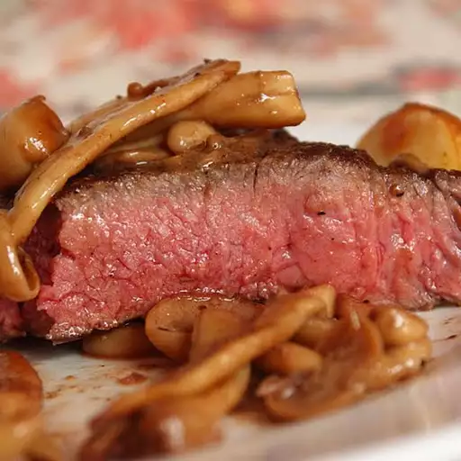

Sous Vide New York Strip

Description
The real advantage to this technique is the fact that you're guaranteeing a perfect medium-rare.
If you've never had any luck getting large, expensive hunks of steak cooked to your idea of perfection, then this is the way to go.
Ingredients
- 2 new york strip steaks
- salt and pepper
- vegetables oil
- butter
Steps
- Heat water to 134 degrees
- Vac seal steaks and season
- Add sealed steaks into water bath when temp reaches 134
- Cook for 1.5 hours and take out of sealed bag when done
- Heat cast iron pan rippin' hot
- Sear steaks. 15-30 seconds per side. A minute and a half total